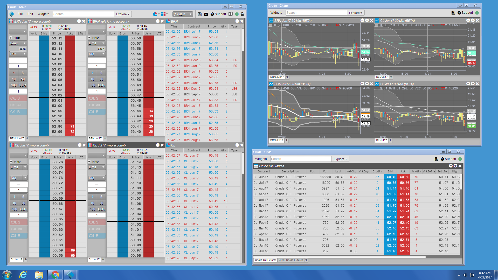
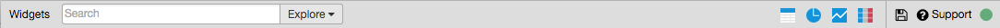

A workspace in TT Desktop is a collection of separate windows that can be viewed simultaneously across as many monitors as the computer hardware and software support. Within each workspace window, traders can add one or more TT widgets to suit their trading preferences. For example, the following workspace includes three windows, each containing a set of widgets.

You can use multiple windows within a workspace to:
A TT Desktop workspace comprises two types of windows:
Parent window is the main workspace window.
The parent workspace window is the main window in a TTD Desktop workspace. It provides access to workspace actions, user preferences, and trading environments. The parent workspace window also creates and manages all child windows created by a user. Closing the parent workspace window also exits the TT Desktop application.
Child windows are created by users from the parent window.
Child windows windows are windows created by user as needed for their trading purposes. Child windows can contain widgets, just like the main workspace window, but their titlebars do not contain items that manage the workspace, such as the File and Edit menus.
The titlebar for child windows is the same as the parent window, except that it omits the File and Edit menus, the Windows selector, the Message Center, and the Lock Workspace icon.
